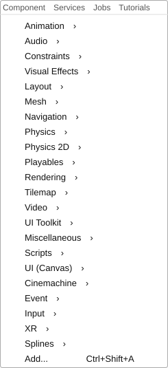
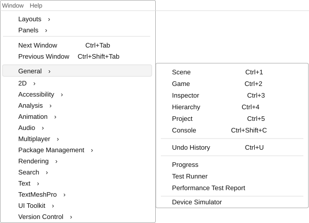

LESSON 05
整理中
ch1_2 Unity3D 環境介紹
先建立 Unity 編輯器的整體地圖，再理解 Asset、GameObject、Component，以及物理、導航與建置工具放在哪裡。
READING MAP
這堂課不用一次記完所有選單
先掌握五個主要視窗與三層核心概念，再把物理、導航、Android 當成需要時再打開的工具箱。否則一進頁面就被 SDK、Collider、NavMesh 圍毆，誰都不會比較聰明。
01 先建立編輯器地圖Scene、Hierarchy、Inspector、Game、Project
Scene開發者編輯遊戲世界的工作區。用來擺放、移動、旋轉與縮放 GameObject。這是施工視角，不是玩家畫面。
Hierarchy列出目前 Scene 裡的所有 GameObject，並顯示父子階層。它管理場景物件，不管理整個專案檔案。
Inspector顯示目前選取項目的詳細資料。選到 GameObject 會看到 Component；選到 Asset 會看到匯入與設定內容。
Game顯示 Camera 實際輸出的畫面，接近玩家執行遊戲時看到的結果。Scene 看得到，不代表 Game 一定拍得到。
Project管理整個專案的 Asset，例如 Scene、Script、Material、Texture、Model、Audio、Animation 與 Prefab。
一句話記憶
Project 管素材，Hierarchy 管物件，Scene 管擺放，Inspector 管屬性，Game 看結果。
Project素材與檔案
拖入
Scene / Hierarchy放置與整理物件
選取
Inspector查看與修改設定
Camera
Game玩家看到的結果
02 核心物件模型Asset → GameObject → Component
Asset
儲存在 Project 與 Assets 資料夾中的專案檔案，例如模型、圖片、腳本、材質、聲音、Scene 與 Prefab。
GameObject
存在 Scene 與 Hierarchy 裡的場景物件容器。把模型或 Prefab 拖進 Scene 後，Unity 會建立或放置對應的 GameObject。
Component
附加在 GameObject 上的資料與功能模組。Renderer 提供外觀、Collider 提供碰撞形狀、腳本提供自訂行為。
- Transform
- 每個 GameObject 都一定擁有，記錄位置、旋轉、縮放與父子階層。
- Empty GameObject
- 只有 Transform、沒有 Renderer 的 GameObject。它看不見，但可用來整理階層、當座標基準或掛管理腳本。
- Parent / Child
- 父子關係透過 Transform 階層運作。父物件的移動、旋轉與縮放通常會連帶影響子物件。
- Prefab
- 可重複使用的 GameObject 結構範本。它在 Project 中以 Asset 存在，放入 Scene 後則成為實例。
03 日常工具與選單需要查操作位置時再展開
File：儲存與建置
- Save
- 儲存目前 Scene。
- Save Project
- 儲存專案範圍的資產與設定變更，不取代 Scene 儲存。
- Build Profiles
- 選擇建置平台並保存平台設定。舊版課程稱為 Build Settings。
- Build And Run
- 建置完成後直接執行遊戲。

Edit：編輯器與專案設定
- Cut / Copy / Paste
- 剪下、複製與貼上目前選取的物件或資產。
- Duplicate
- 複製目前選取內容，快捷鍵為
Ctrl+D。 - Preferences
- 調整這台電腦上的 Unity Editor 個人偏好，例如外部腳本編輯器。
- Project Settings
- 修改目前專案的輸入、物理、品質、標籤與平台設定。
Assets、GameObject、Component
Assets → Create
建立 Material、Script、Input Actions 等專案資產。
GameObject
建立 Cube、Sphere、Camera、Light、UI、Empty 等場景物件。
Component
替目前選取的 GameObject 增加外觀、物理、聲音或腳本功能。



Window 與常用快捷鍵
- Ctrl+1
- Scene
- Ctrl+2
- Game
- Ctrl+3
- Inspector
- Ctrl+4
- Hierarchy
- Ctrl+5
- Project
- Ctrl+Shift+C
- Console
- Animation
- 從 Window → Animation → Animation 開啟；實際快捷鍵以 Edit → Shortcuts 為準。

05 建置與開發環境Build Profiles、外部編輯器與 Android 工具鏈
Build Profiles 與 External Tools
- Build Profiles
- 選擇目標平台並保存建置設定。切換到 Android 只會改變目前建置目標，不會自動安裝 Android 工具。
- External Script Editor
- 在 Edit → Preferences → External Tools 選擇雙擊 C# 腳本時使用的編輯器，本筆記使用 VS Code。
- Android 區塊
- 必須先替目前 Unity Editor 安裝 Android Build Support、Android SDK & NDK Tools 與 OpenJDK，之後才會在 External Tools 顯示。


Android 工具鏈名詞
- SDK
- Software Development Kit。提供 Android 平台 API、建置工具與裝置連線工具。
- NDK
- Native Development Kit。負責 Android 上的 C／C++ 原生程式碼；使用 IL2CPP 時可能參與編譯。
- JDK
- Java Development Kit。Android 建置流程依賴的 Java 開發工具。
- Gradle
- 安排編譯、相依套件與資源整合，最後封裝成 APK 或 AAB。
- IL2CPP
- Intermediate Language To C++。把 C# 編譯結果轉成 C++，再針對目標平台編譯成原生程式。
工具鏈關係
C# 可經 IL2CPP 轉成 C++；NDK 編譯原生程式，SDK 提供 Android 平台工具，JDK 與 Gradle 協助建置與封裝。
06 Play Mode 與舊版課程差異最後再看，避免版本落差干擾主線
- Play
- 執行遊戲。
- Pause
- 暫停目前執行狀態。
- Step
- 逐幀執行，方便觀察每一步變化。
舊版課程提醒
Build Settings 已改為 Build Profiles；MonoDevelop 不再是現代 Unity 的主要選擇；舊版 Navigation 視窗的 Bake 流程，現代版本主要改由 AI Navigation 套件中的 NavMesh Surface 在 Inspector 完成。快捷鍵也應以目前的 Shortcuts Manager 為準。